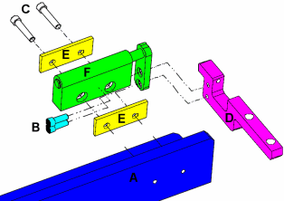

This procedure describes how to replace broken or defective reagent pack load tray hinges.
Replace reagent pack load tray hinges when they are broken or defective.
Open the SPU.
The SPU is hinged on the left side. The right side is released and can be swung out from the instrument to approximately 45 degrees.
Open the upper left cover of the instrument.
Loosen the locking screw.
The locking screw prevents the SPU from swinging outward from the instrument. It is not necessary to remove the screw because the SPU plate is slotted.
Remove the 3/16-in hex bolt located near the right end of the SPU cover.
Open the lower right access panel on the front of the instrument.
Pull the spring-loaded captive pin that holds the panel (located under the SPU) to the frame.
Grasping the SPU near the right end, swing the right end away from the instrument.
Warning: The SPU off-load area slides forward and rearward as the SPU is swung in and out. To prevent damage to the SPU or the off-load area, confirm that nothing obstructs the movement of the off-load area as the SPU is moved.
(For China and Canada Only.) On the front facing the edge of the Framus assembly, install the Chinese and French labels adjacent to the existing English label.
Note: The labels are in the DxI Installation Kit.
Remove the main front cover (Framus).
Remove the two screws holding the right end of the main front cover (Framus) to the instrument.
The Framus is the instrument skin and frame located mostly to the right of the SPU.
Note: DxI 800 only: Early instruments also have two screws holding the left end of the Framus to the instrument. If the two screws are there, loosen them. The left end of the Framus is slotted for removal.
DxI 800 only: Loosen the four captive screws mounting the substrate loader module to the Framus. Pull the captive pin on the module left side, and slide the module upward so that the pin locks into the hole provided on the front of the instrument.
DxI 800 only: Remove the triangular-shaped support plate at the center of the Framus (four screws).
The mounting holes are slotted to simplify removal.
Lift the Framus up slightly, and then remove these connectors from the reagent storage interface PCB:
J25 - Reagent Load Door
J30 - Bar Code Reader
DxI 800 only: J29 - Ribbon Cable
Disconnect the two SPU interlock switch wires from the terminals on the under side of the Framus.
Remove the Framus from the instrument.
Note: To disengage the cover latch on the reagent load tray and remove the Framus, operate the release lever under the load tray inside the lower right access door.
Disconnect the load tray door interlock wires from the back side of the Framus.
Note: Mark the connectors before disconnecting them from the interlock switch.
Replace the reagent pack load tray hinges.

Remove the two button-head screws to free the load tray door from the Framus.
Remove the two screws that hold the hinges to the hinge-door bracket.
Remove the two screws that hold the hinges to the hinge block arm.
Attach new hinges (F) to the hinge block arms (D) using the two 5/16-in socket-head screws (B).
Position a plate (E) on either side of the hinge (F) and fasten it to the hinge-door bracket (A) using the two 5/8-in socket-head screws (C).
Attach the hinge-door bracket and load tray door assembly to the Framus using the two button-head screws that were removed.
Install the Framus and close the SPU.
Reconnect the load tray door interlock wires on the back side of the Framus.
Hold the Framus above the reagent storage module interface PCB and reconnect:
J25 - Reagent Load Door
J30 - Bar Code Reader
DxI 800 only: J29 - Ribbon Cable
The location of reagent load door connector going to J25 is different between PCB versions.
The bar code reader cable must run under the load tray and behind the bar code reader.
Reconnect the two SPU interlock switch wires to the two interlock switch terminals on the underside of the Framus.
Install the main front cover (Framus).
Place the Framus on the instrument and mount it to the right end (two screws).
Note:
To disengage the cover latch on the reagent load tray when installing the Framus, operate the release lever located under the reagent load tray inside the lower right access door.
DxI 800 only: Early instruments also have two screws that hold the left end of the Framus to the instrument. If the instrument has these screws, install them to mount the Framus on the left end.
DxI 800 only: Move the substrate loader from the hanging position on the front of the instrument, down onto the Framus. Tighten the four captive screws that mount the substrate loader to the Framus.
DxI 800 only: Mount the triangular-shaped support plate at the center of the Framus (four screws).
Open the lower right access door on the front of the instrument.
Close the SPU.
The SPU is hinged on the left side. The right side is released and can be swung out from the instrument to approximately 45 degrees.
Warning: The SPU off-load area slides forward and rearward as the SPU is swung in and out. To prevent damage to the SPU or the off-load area, confirm that nothing obstructs the movement of the off-load area as the SPU is moved.
Grasping the SPU near the right end, swing the right end toward the instrument.
Pull the spring-loaded captive pin to attach the panel (located under the SPU) to the frame.
Close the lower right access panel on the front of the instrument.
Insert the 3/16-in hex bolt.
Tighten the bolt that holds the SPU from swinging outward from the instrument (locking screw).
Close the upper left cover of the instrument.
Note: Initialize the instrument after opening and closing the SPU, because a switch is actuated when the SPU is opened.
Verify operation of the instrument.
Open and close the reagent load tray door multiple times to verify free movement.
Verify that the load tray door is secured with the door latch.